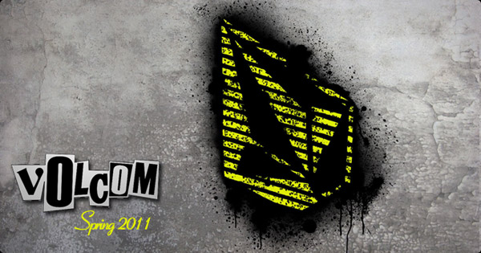

Sziasztok!
Nem tagadjuk, jó hét áll mögöttünk, adtatok nekünk munkát bőven! Az, hogy ennek az oka a "sikeres" locsolkodás, a húsvéti ajándékkártyás akciónk vagy csak simán a Coreshop kiváló készlete nem tudjuk, de mindenképpen örülünk, hogy ennyien találtok számotokra tetsző cuccokat nálunk és bízunk benne, hogy ezeket már használjátok is! Ne feledjétek, a rendelést követően kapott e-mail egy elektronikus ajándékkártya, melyet július 31-ig bármilyen vásárlásnál fel tudtok használni az azon található értékben.
A húsvéti akciónk 29-én, péntek estig még tart, tehát bármit rendelsz, akkor a megrendelés értékének 10%-át e-giftcard formájában visszakapod.

Na és akkor térjünk rá e heti újdonságainkra:
Volcom szállítmány érkezett hozzánk, benne pólók, széldzsekik, rövidnadrágok, papucsok (5 férfi és 5 női modell), valamint számos kiegészítő, mint táskák, övek, pénztárcák és sapkák. A Volcom népszerű a Coreshop vásárlói körében, de szemben egyéb populáris márkákkal a Volcom exklúzívabb, egyedibb megjelenést ad annak akinek a választása rá esik.
Bár napszemüvegekből a Vans most a slágertermék (amíg a készlet tart!), de ne feledkezzünk meg a Dragon-ról sem. A Dragon bár drágább, de egy igényes, tartós darab és most válogathatsz a napokban beérkezett Dragon ruhák közül is: pólókkal, sapkákkal és övekkel bővült a Coreshop választéka a sárkányos márkából.
Áprilisi statisztikánk csúcsán a cipők állnak, ehhez igazítottuk készletünket is. Ha Te még nem szereztél be tavaszra új cipőt, akkor ne késlekedj, kínálatunk most talán jobb mint valaha: Vans, DC, etnies, éS, Emerica, Fallen és Nike (SB, 6.0) cipők, a legújabbak és akciósok egyaránt megtalálhatóak nálunk.
Köszönjük hogy húsvétkor is minket választottatok! Továbbra is azon dolgozunk hogy egyedülállóan gyors szolgáltatásunkkal és gondosan válogatott kínálatunkkal a kedvenc webshop-otok legyünk!
Hamarosan újra jelentkezünk, addig is maradjunk kapcsolatban a Facebook-on keresztül,
CoreTeam
Ha levelünket nem jeleníti meg levelezõprogramod,
itt megnyithatod böngészõdben:
Coreshop hírlevél - 17.hét